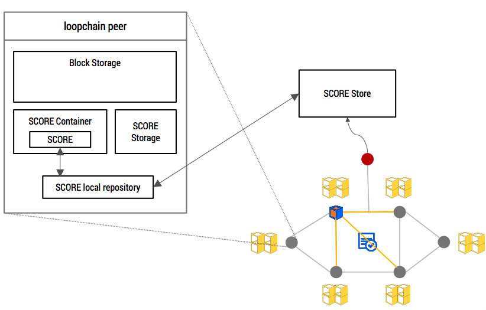
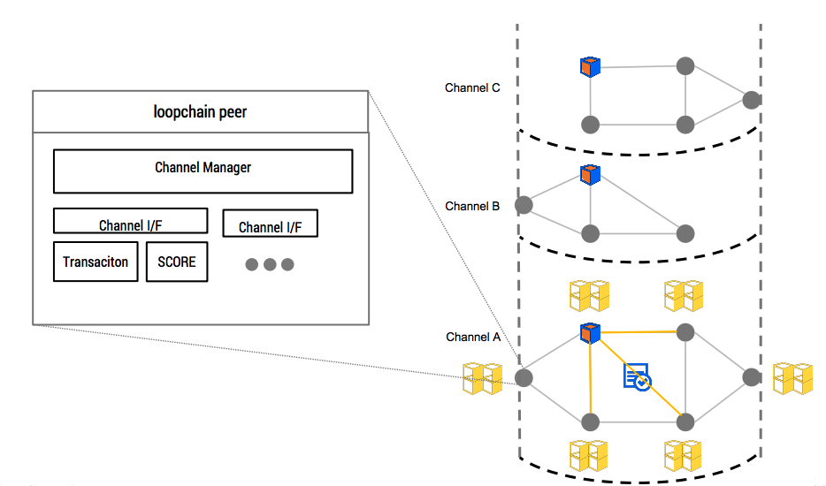

Introduction¶
What is loopchain?¶
loopchain은 효율적인 Smart Contract를 기반으로 실시간 거래를 지원할 수 있는 고성능 블록체인입니다.
loopchain 주요 특징¶
SCORE (Smart Contract on Reliable Environment)¶
SCORE는 loopchain에서 지원하는 Smart Contract을 지칭하는 것으로 별도의 VM(Virtual Machine) 없이 노드 운영환경에서 직접적으로 실행되는 고성능 Smart Contract 지원 기능입니다.
- SCORE는 쉽게 작성할 수 있어서 높은 개발 생산성을 가진 Smart Contract입니다.
- SCORE는 블록체인 프로세스와 별도의 프로세스로 동작하면서 다양한 업무를 개발할 수 있도록 지원합니다.
- SCORE store를 통한 등록, 배포 및 버전 관리를 제공합니다.

LFT algorithm¶
LFT algorithm은 BFT(Byzantine Fault Tolerance) 계열의 알고리즘으로 분기가 없는 빠른 합의를 지원합니다. BFT 계열 합의 알고리즘은 머신의 개수나, 지분을 통하여 투표를 하여 합의하는 방식으로 에너지 낭비가 없고 즉각적인 합의가 가능하다는 장점이 있습니다.
- 기존 PBFT를 사용하는 합의 알고리즘에서 발생하는 통신 오버헤드를 Piggybacking(네트워크에서 메시지를 통합하여 통신 오버헤드를 감소시키는 방법)을 이용하여 감소
- Spinning(리더를 매번 교체하는 기법) 기법을 이용하여 일정한 개수의 블록 생성 시 마다 리더를 교체하여 비잔틴 리더에 발생할 수 있는 서비스 장애 요소(특정 노드의 트랜잭션을 거부하는 문제, 리더가 매번 시간 초과 시간에 맞춰 블록을 생성하려는 시도에 대한 피해)를 최소화
- 기존 알고리즘들이 가지고 있는 지나치게 복잡한 리더 선정 알고리즘을 단순화

LFT algorithm에 대한 조금 더 자세한 설명은 링크를 참고하십시오.
참고적으로 loopchain은 plug-in 형태로 합의 알고리즘이 구현되어 있기 때문에 필요에 따라 PBFT(Pratical Byzantine Fault Tolerance)와 같은 다른 합의 알고리즘을 사용 가능합니다.
Multi Channel¶
Multi Channel은 하나의 독립적인 블록체인 네트워크 안에서 업무별로 채널이라는 가상의 네트워크를 구성하여 채널 별로 거래 요청, 합의 및 Smart Contract를 수행할 수 있는 기능입니다.
하나의 노드에서 여러 업무별 당사자들만 연결된 다양한 업무별 채널을 형성하기 때문에 채널 별로 무결성 보장 및 합의가 이루어집니다. 따라서 거래 데이터가 실제 거래 당사자들만 보유하게 되어 다양한 규제에 대응할 수 있습니다.

Tiered Channel¶
블록체인 네트워크에 참여시 인증과 함께 거래 별로 PKI 기반 인증을 통해 거래 내역 검증 및 보안이 이뤄집니다. 인증된 기관만 참여시키며 각 참가자에게 차등적 권한을 부여함으로서 다양한 엔터프라이즈 업무 환경에 적합한 시스템 구현이 가능합니다.
거래에 참여하지 않지만 필요에 따라 거래 내역을 감사할 수 있는 기능을 특정 노드에 부여를 하여 감사만을 위한 노드 생성이 가능하므로 금융 시스템이 요구하는 Compliance 기능을 제공합니다.
- 다른 권한을 가진 인증서 배포. 블록 체인 참여자는 정보 확인 및 관리에 대해서 각각 다른 권한을 가집니다.
- 검증 노드, 트랜잭션 생성 노드 등의 특정 노드 생성 가능합니다.
Modular Architecture¶
모듈 방식 아키텍처를 채택하여 참여 노드 인증 및 합의 알고리즘, Smart Contract 모듈 등을 필요한 경우에 추가 및 커스터마이징이 가능합니다.